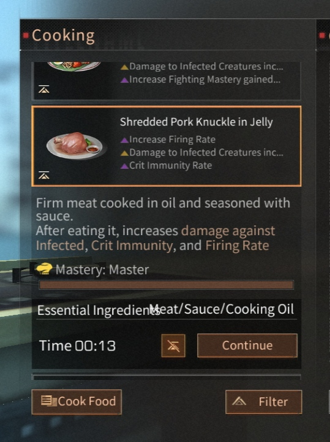
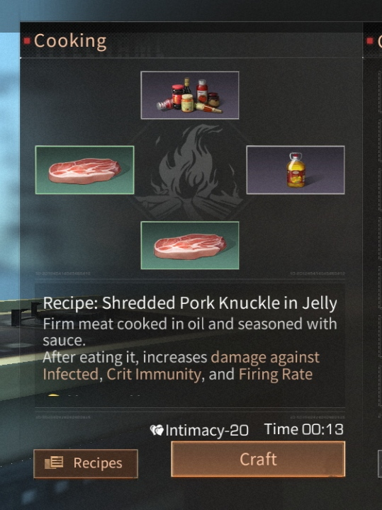
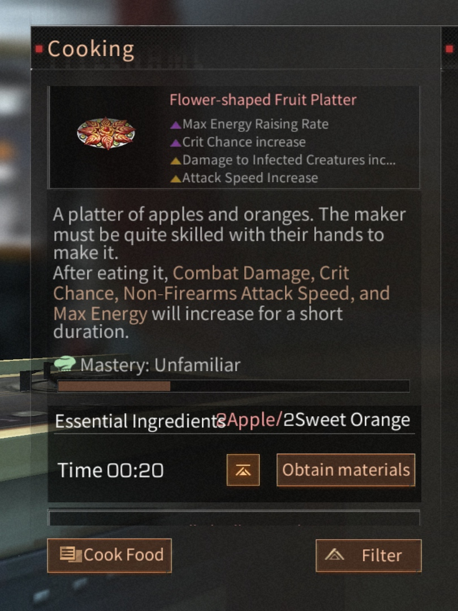
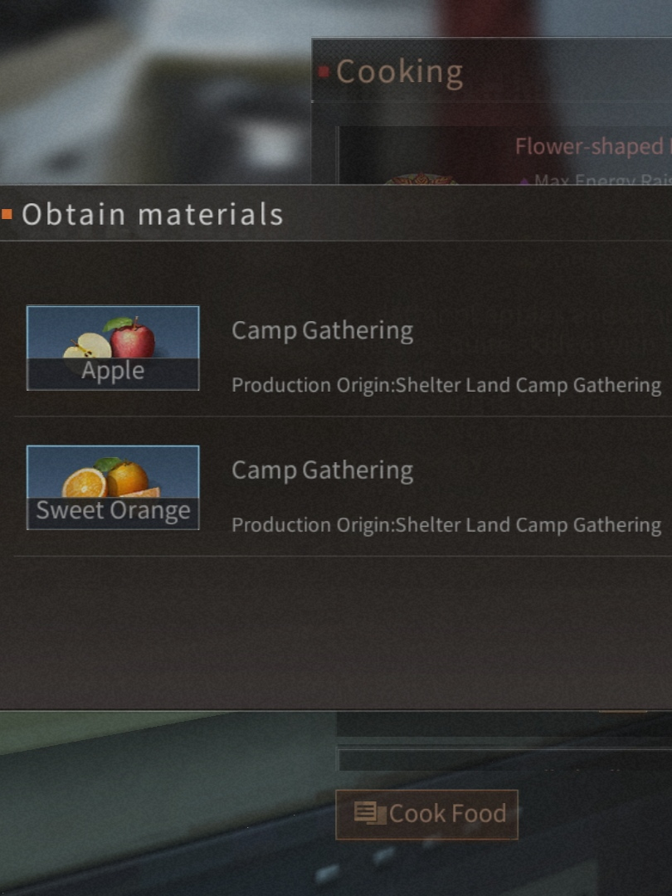

สูตรอาหาร Lifeafter
1.ข้าวมะพร้าว
เพิ่มอัตราการยิง
ความเสียหายต่อสิ่งมีชีวิตที่ติดเชื้อรวมถึง...
เพิ่มความเชี่ยวชาญในการต่อสู้ที่ได้รับ...
ข้าวสีครีมนี้ให้กลิ่นหอมของมะพร้าวที่น่ารื่นรมย์และสดชื่น หลังจากกินมัน ประสิทธิภาพการได้รับ Combat Mastery, ความเสียหายที่ทำกับผู้ติดเชื้อและความเร็วการยิงจะเพิ่มขึ้นในช่วงเวลาสั้นๆ
ส่วนผสมสำคัญ/1ไข่/1ข้าว/1มะพร้าว/1ซอส
2.ไข่นึ่งส้ม
เพิ่มอัตราการยิง
ความเสียหายต่อสิ่งมีชีวิตที่ติดเชื้อรวมถึง...
ความมั่นคง
เพิ่มความเสียหายจากการยิงศีรษะ
คัสตาร์ดไข่ที่มีกลิ่นหอมหวานของส้ม มันอร่อยมาก
หลังจากกินมันแล้ว ความเสียหายจากการต่อสู้ ความเร็วในการยิง ความเสียหายจากการยิงหัว และความเสถียรจะเพิ่มขึ้นในช่วงเวลาสั้นๆ
ส่วนผสมสำคัญญ 3 ไข่/1 ส้ม
เนื้อและผ้าขี้ริ้ววัวในซอสพริก
เพิ่มอัตราการยิง
ความเสียหายต่อสิ่งมีชีวิตที่ติดเชื้อรวมถึง...
เพิ่มความเสียหายจากการยิงหัว
รสชาติเผ็ดร้อนของความรัก หลังจากกินมัน จะเพิ่มความเสียหายต่อผู้ติดเชื้อ ความเสียหายจากการยิงศีรษะ และอัตราการยิง
ส่วนผสมสำคัญัญ1พริก/1 น้ำมัน/2 เครื่องในสัตว์
อมยิ้มผลไม้
ปรับปรุงความเร็วในการเคลื่อนที่
เพิ่มความเร็วในการว่ายน้ำ
อมยิ้มผลไม้แสนอร่อย หลังจากรับประทานอาหารในช่วงเวลาสั้นๆ จะเพิ่มความเร็วในการเคลื่อนที่และความเร็วในการว่ายน้ำ
สามารถทำได้บนเตาย่างในครัวเรือนเท่านั้น
ส่วนผสมสำคัญญ 2น้ำผึ้ง/2เบอร์รี่
ขาหมูฉีกในเยลลี่

เพิ่มอัตราการยิง
ความเสียหายต่อสิ่งมีชีวิตที่ติดเชื้อรวมถึง...
อัตราภูมิคุ้มกันคริติคอล
เนื้อแน่นปรุงในน้ำมันและซอสรสด้วยซอส
หลังจากกินมัน จะเพิ่มความเสียหายต่อผู้ติดเชื้อ ภูมิคุ้มกันคริติคอล และอัตราการยิง
ส่วนผสมสำคัญ 1น้ำมัน1ซอส2เนื้อสัตว์

จานผลไม้รูปดอกไม้

อัตราการเพิ่มพลังงานสูงสุด
โอกาสคริติคอลเพิ่มขึ้น
ความเสียหายต่อสิ่งมีชีวิตที่ติดเชื้อรวมถึง..
เพิ่มความเร็วการโจมตี
แอปเปิ้ลและส้มหนึ่งจาน คนทำต้องมีฝีมือพอสมควรถึงจะทำได้
หลังจากกินมัน ความเสียหายจากการต่อสู้ โอกาสคริติคอล ความเร็วการโจมตีที่ไม่ใช่อาวุธปืน และพลังงานสูงสุดจะเพิ่มขึ้นในช่วงเวลาสั้นๆ
ส่วนผสมสำคัญ แอปเปิล2 ส้ม2
